WESC 2023 - Simple Demo#
# stdlib
from pathlib import Path
import matplotlib.pyplot as plt
import numpy as np
# wcomp
from wcomp import WCompFloris, WCompPyWake, WCompFoxes
from wcomp.plotting import plot_plane
# Path to the primary windIO input file
CASE_DIR = Path('cases_wesc2023')
case_1turbine = CASE_DIR / Path('single_turbine/wind_energy_system.yaml')
case_Nturbine = CASE_DIR / Path('many_turbine/IEA37_case_study_1_2_wind_energy_system.yaml')
case_bastankah = CASE_DIR / Path('bastankah/IEA37_case_study_1_2_wind_energy_system.yaml')
/opt/hostedtoolcache/Python/3.12.14/x64/lib/python3.12/site-packages/tqdm/auto.py:21: TqdmWarning: IProgress not found. Please update jupyter and ipywidgets. See https://ipywidgets.readthedocs.io/en/stable/user_install.html
from .autonotebook import tqdm as notebook_tqdm
1 turbine case#
This case demonstrates the wcomp capabilities to compare 1-D streamwise profile, 1-D cross sectional profile, and 2-D wake profiles at a given location.
# Create the data via each software's WComp interface
pywake_1turbine = WCompPyWake(case_1turbine)
floris_1turbine = WCompFloris(case_1turbine)
foxes_1turbine = WCompFoxes(case_1turbine)
ROTOR_D = floris_1turbine.rotor_diameter
# NOTE: Pywake plotting uses plt.gca -> plt.gcf... get current figure meaning it will add
# onto the current figure. Since PyWake does it, wcomp adopts this pattern, as well.
Turbine 0, T0: xy=(0.00, 0.00), windio_turbine
Selecting 'DefaultEngine(n_procs=4, chunk_size_states=None, chunk_size_points=None)'
DefaultEngine: Selecting engine 'single'
SingleChunkEngine: Calculating 1 states for 1 turbines
SingleChunkEngine: Starting calculation using a single worker.
SingleChunkEngine: Completed all 1 chunks
Streamwise 1D profile of the wake#
XMIN = -1 * ROTOR_D
XMAX = 20 * ROTOR_D
fig, ax = plt.subplots()
pywake_1turbine.streamwise_profile_plot(wind_direction=270, y_coordinate=0.0, xmin=XMIN, xmax=XMAX)
floris_1turbine.streamwise_profile_plot(wind_direction=270, y_coordinate=0.0, xmin=XMIN, xmax=XMAX)
foxes_1turbine.streamwise_profile_plot(wind_direction=270, y_coordinate=0.0, xmin=XMIN, xmax=XMAX)
ax.set_title("Streamwise velocity profile")
ax.set_xlabel("X (m)")
ax.set_ylabel('U (m/s)')
ax.set_ybound(lower=0.0)
ax.legend()
ax.grid()
DefaultEngine: Selecting engine 'single'
SingleChunkEngine: Calculating data at 100 points for 1 states
SingleChunkEngine: Starting calculation using a single worker.
SingleChunkEngine: Completed all 1 chunks
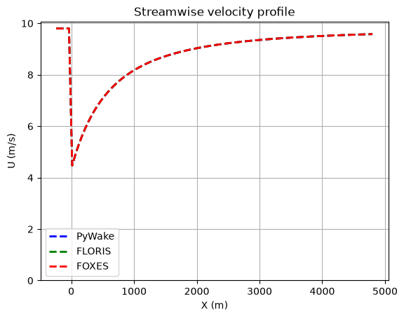
Cross section 1D profile of the wake#
YMIN = -2 * ROTOR_D
YMAX = 2 * ROTOR_D
fig, ax = plt.subplots(3, 1)
fig.suptitle("Cross section velocity profile")
X_D = [1, 5, 10]
for i, D_X in enumerate(X_D):
plt.axes(ax[i])
pywake_1turbine.xsection_profile_plot(wind_direction=270, x_coordinate=D_X * ROTOR_D, ymin=YMIN, ymax=YMAX)
floris_1turbine.xsection_profile_plot(wind_direction=270, x_coordinate=D_X * ROTOR_D, ymin=YMIN, ymax=YMAX)
foxes_1turbine.xsection_profile_plot(wind_direction=270, x_coordinate=D_X * ROTOR_D, ymin=YMIN, ymax=YMAX)
ax[i].set_title(f"{D_X} D")
ax[i].set_ylabel("U (m/s)")
ax[i].set_ybound(lower=0.0, upper=12.0)
ax[i].grid()
if i < len(X_D) - 1:
ax[i].xaxis.set_ticklabels([])
else:
ax[i].set_xlabel("Y (m)")
ax[i].legend()
DefaultEngine: Selecting engine 'single'
SingleChunkEngine: Calculating data at 100 points for 1 states
SingleChunkEngine: Starting calculation using a single worker.
SingleChunkEngine: Completed all 1 chunks
DefaultEngine: Selecting engine 'single'
SingleChunkEngine: Calculating data at 100 points for 1 states
SingleChunkEngine: Starting calculation using a single worker.
SingleChunkEngine: Completed all 1 chunks
DefaultEngine: Selecting engine 'single'
SingleChunkEngine: Calculating data at 100 points for 1 states
SingleChunkEngine: Starting calculation using a single worker.
SingleChunkEngine: Completed all 1 chunks
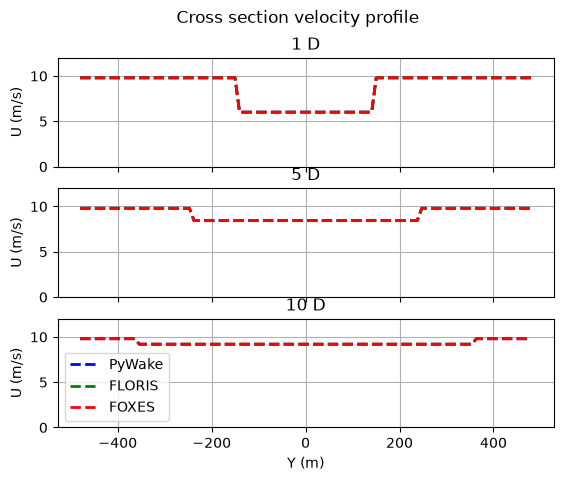
Horizontal 2D turbine wake profile and diff plot#
fig, ax = plt.subplots(3, 1)
fig.suptitle("Horizontal streamwise velocity contour")
plt.axes(ax[0])
ax[0].xaxis.set_ticklabels([])
pywake_plane = pywake_1turbine.horizontal_contour(wind_direction=270)
plt.axes(ax[1])
ax[1].xaxis.set_ticklabels([])
floris_plane = floris_1turbine.horizontal_contour(wind_direction=270)
plt.axes(ax[2])
foxes_plane = foxes_1turbine.horizontal_contour(wind_direction=270)
# Diff of the 2D wakes
fig, ax = plt.subplots(2, 1)
fig.suptitle("Diff contour")
plt.axes(ax[0])
ax[0].xaxis.set_ticklabels([])
diff = floris_plane - pywake_plane
abs_diff = np.abs(diff.values)
min_speed = -1 * np.max(abs_diff)
max_speed = np.max(abs_diff)
plot_plane(
diff,
min_speed=min_speed,
max_speed=max_speed,
cmap='PuOr',
clevels=100,
color_bar=True,
title="FLORIS - PyWake"
)
plt.axes(ax[1])
diff = floris_plane - foxes_plane
abs_diff = np.abs(diff.values)
min_speed = -1 * np.max(abs_diff)
max_speed = np.max(abs_diff)
plot_plane(
diff,
min_speed=min_speed,
max_speed=max_speed,
cmap='PuOr',
clevels=100,
color_bar=True,
title="FLORIS - FOXES"
)
DefaultEngine: Selecting engine 'process'
ProcessEngine: Calculating data at 28033 points for 1 states
ProcessEngine: Starting calculation using 3 workers, for 1 states chunks and 3 targets chunks.
0%| | 0/3 [00:00<?, ?it/s]
100%|██████████| 3/3 [00:00<00:00, 28.71it/s]
100%|██████████| 3/3 [00:00<00:00, 28.25it/s]
ProcessEngine: Completed all 3 chunks
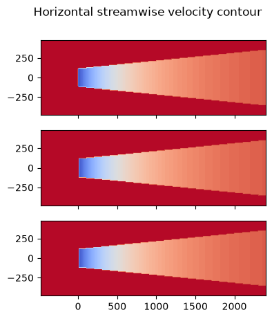
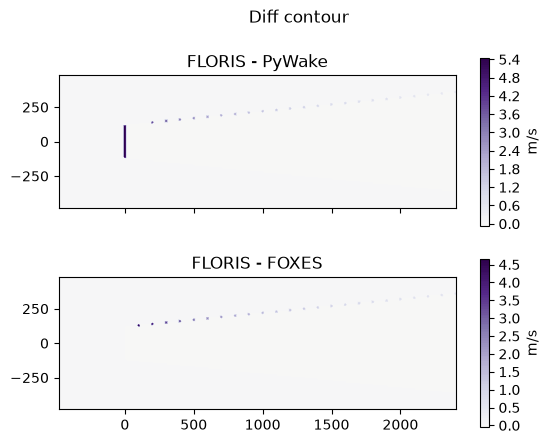
16 turbine case#
This case shows the ability scale the comparisons to the wind farm level by creating a new case in the windIO description.
pywake_Nturbine = WCompPyWake(case_Nturbine)
floris_Nturbine = WCompFloris(case_Nturbine)
foxes_Nturbine = WCompFoxes(case_Nturbine)
Turbine 0, T0: xy=(0.00, 0.00), windio_turbine
Turbine 1, T1: xy=(650.00, 0.00), windio_turbine
Turbine 2, T2: xy=(200.86, 618.19), windio_turbine
Turbine 3, T3: xy=(-525.86, 382.06), windio_turbine
Turbine 4, T4: xy=(-525.86, -382.06), windio_turbine
Turbine 5, T5: xy=(200.86, -618.19), windio_turbine
Turbine 6, T6: xy=(1300.00, 0.00), windio_turbine
Turbine 7, T7: xy=(1051.72, 764.12), windio_turbine
Turbine 8, T8: xy=(401.72, 1236.37), windio_turbine
Turbine 9, T9: xy=(-401.72, 1236.37), windio_turbine
Turbine 10, T10: xy=(-1051.72, 764.12), windio_turbine
Turbine 11, T11: xy=(-1300.00, 0.00), windio_turbine
Turbine 12, T12: xy=(-1051.72, -764.12), windio_turbine
Turbine 13, T13: xy=(-401.72, -1236.37), windio_turbine
Turbine 14, T14: xy=(401.72, -1236.37), windio_turbine
Turbine 15, T15: xy=(1051.72, -764.12), windio_turbine
DefaultEngine: Selecting engine 'single'
SingleChunkEngine: Calculating 1 states for 16 turbines
SingleChunkEngine: Starting calculation using a single worker.
SingleChunkEngine: Completed all 1 chunks
Horiztonal 2-D farm profiles#
XMIN = -2000
XMAX = 5000
fig, ax = plt.subplots()
pywake_Nturbine.streamwise_profile_plot(wind_direction=270, y_coordinate=0.0, xmin=XMIN, xmax=XMAX)
floris_Nturbine.streamwise_profile_plot(wind_direction=270, y_coordinate=0.0, xmin=XMIN, xmax=XMAX)
foxes_Nturbine.streamwise_profile_plot(wind_direction=270, y_coordinate=0.0, xmin=XMIN, xmax=XMAX)
ax.set_title("Streamwise profile of velocity")
ax.set_xlabel("X (m)")
ax.set_ylabel('U (m/s)')
ax.set_ybound(lower=0.0)
ax.legend()
ax.grid()
YMIN = -2000
YMAX = 2000
fig, ax = plt.subplots()
pywake_Nturbine.xsection_profile_plot(wind_direction=270, x_coordinate=0.0, ymin=YMIN, ymax=YMAX)
floris_Nturbine.xsection_profile_plot(wind_direction=270, x_coordinate=0.0, ymin=YMIN, ymax=YMAX)
foxes_Nturbine.xsection_profile_plot(wind_direction=270, x_coordinate=0.0, ymin=YMIN, ymax=YMAX)
ax.set_title("Cross section of streamwise velocity")
ax.set_xlabel("Y (m)")
ax.set_ylabel("U (m/s)")
ax.set_ybound(lower=0.0, upper=12.0)
ax.legend()
ax.grid()
fig, ax = plt.subplots()
pywake_plane = pywake_Nturbine.horizontal_contour(wind_direction=270)
fig, ax = plt.subplots()
floris_plane = floris_Nturbine.horizontal_contour(wind_direction=270)
fig, ax = plt.subplots()
foxes_plane = foxes_Nturbine.horizontal_contour(wind_direction=270)
fig, ax = plt.subplots()
diff = floris_plane - pywake_plane
abs_diff = np.abs(diff.values)
min_speed = -1 * np.max(abs_diff)
max_speed = np.max(abs_diff)
plot_plane(
diff,
color_bar=True,
clevels=100,
cmap='PuOr',
min_speed=min_speed,
max_speed=max_speed,
)
fig, ax = plt.subplots()
diff = floris_plane - foxes_plane
abs_diff = np.abs(diff.values)
min_speed = -1 * np.max(abs_diff)
max_speed = np.max(abs_diff)
plot_plane(
diff,
color_bar=True,
clevels=100,
cmap='PuOr',
min_speed=min_speed,
max_speed=max_speed,
)
DefaultEngine: Selecting engine 'single'
SingleChunkEngine: Calculating data at 100 points for 1 states
SingleChunkEngine: Starting calculation using a single worker.
SingleChunkEngine: Completed all 1 chunks
DefaultEngine: Selecting engine 'single'
SingleChunkEngine: Calculating data at 100 points for 1 states
SingleChunkEngine: Starting calculation using a single worker.
SingleChunkEngine: Completed all 1 chunks
DefaultEngine: Selecting engine 'process'
ProcessEngine: Calculating data at 188856 points for 1 states
ProcessEngine: Starting calculation using 3 workers, for 1 states chunks and 3 targets chunks.
0%| | 0/3 [00:00<?, ?it/s]
33%|███▎ | 1/3 [00:00<00:00, 7.20it/s]
100%|██████████| 3/3 [00:00<00:00, 14.53it/s]
ProcessEngine: Completed all 3 chunks
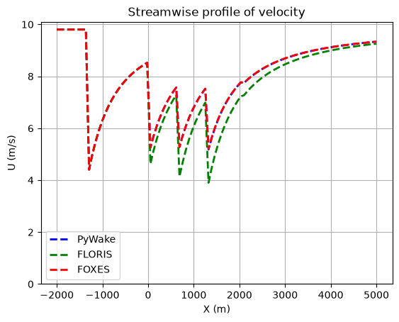
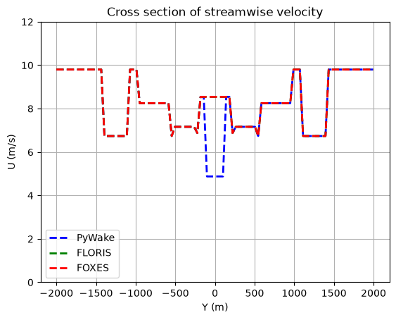
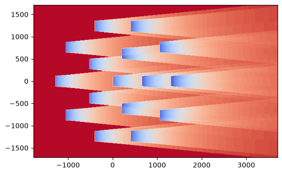
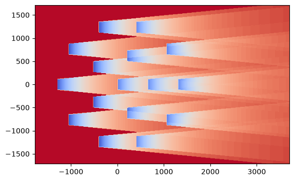
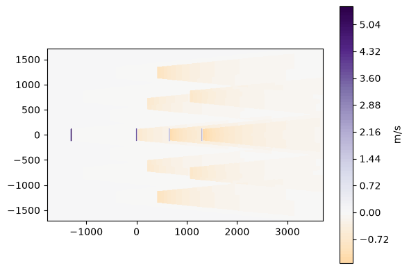
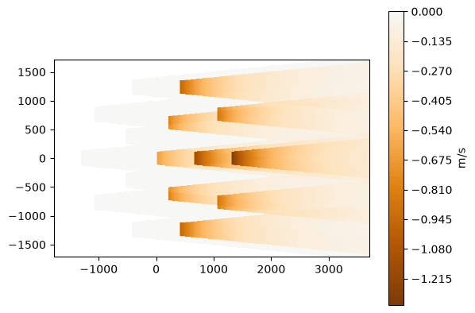
Analyzing additional models#
Similarly, comparing results for different wake models requires only creating a new windIO case description.
# pywake_bastankah = WCompPyWake(case_bastankah)
floris_bastankah = WCompFloris(case_bastankah)
foxes_bastankah = WCompFoxes(case_bastankah)
# fig, ax = plt.subplots()
# pywake_plane = pywake_bastankah.horizontal_contour(wind_direction=270)
fig, ax = plt.subplots()
floris_plane = floris_bastankah.horizontal_contour(wind_direction=270)
fig, ax = plt.subplots()
foxes_plane = foxes_bastankah.horizontal_contour(wind_direction=270)
# Cross section of the wake
fig, ax = plt.subplots(3, 1)
fig.suptitle("Cross section contour")
plt.axes(ax[0])
ax[0].xaxis.set_ticklabels([])
# pywake_plane = pywake_bastankah.xsection_contour(wind_direction=270, x_coordinate=0.0)
floris_plane = floris_bastankah.xsection_contour(wind_direction=270, x_coordinate=0.0)
plt.axes(ax[1])
ax[1].xaxis.set_ticklabels([])
foxes_plane = foxes_bastankah.xsection_contour(wind_direction=270, x_coordinate=0.0)
plt.axes(ax[2])
ax[2].xaxis.set_ticklabels([])
diff = floris_plane - foxes_plane
abs_diff = np.abs(diff.values)
min_speed = -1 * np.max(abs_diff)
max_speed = np.max(abs_diff)
plot_plane(
diff,
min_speed=min_speed,
max_speed=max_speed,
cmap='PuOr',
clevels=100,
color_bar=True,
title="Middle - Top"
)
Turbine 0, T0: xy=(0.00, 0.00), windio_turbine
Turbine 1, T1: xy=(650.00, 0.00), windio_turbine
Turbine 2, T2: xy=(200.86, 618.19), windio_turbine
Turbine 3, T3: xy=(-525.86, 382.06), windio_turbine
Turbine 4, T4: xy=(-525.86, -382.06), windio_turbine
Turbine 5, T5: xy=(200.86, -618.19), windio_turbine
Turbine 6, T6: xy=(1300.00, 0.00), windio_turbine
Turbine 7, T7: xy=(1051.72, 764.12), windio_turbine
Turbine 8, T8: xy=(401.72, 1236.37), windio_turbine
Turbine 9, T9: xy=(-401.72, 1236.37), windio_turbine
Turbine 10, T10: xy=(-1051.72, 764.12), windio_turbine
Turbine 11, T11: xy=(-1300.00, 0.00), windio_turbine
Turbine 12, T12: xy=(-1051.72, -764.12), windio_turbine
Turbine 13, T13: xy=(-401.72, -1236.37), windio_turbine
Turbine 14, T14: xy=(401.72, -1236.37), windio_turbine
Turbine 15, T15: xy=(1051.72, -764.12), windio_turbine
DefaultEngine: Selecting engine 'single'
SingleChunkEngine: Calculating 1 states for 16 turbines
SingleChunkEngine: Starting calculation using a single worker.
SingleChunkEngine: Completed all 1 chunks
DefaultEngine: Selecting engine 'process'
ProcessEngine: Calculating data at 188856 points for 1 states
ProcessEngine: Starting calculation using 3 workers, for 1 states chunks and 3 targets chunks.
0%| | 0/3 [00:00<?, ?it/s]
33%|███▎ | 1/3 [00:00<00:00, 6.03it/s]
67%|██████▋ | 2/3 [00:00<00:00, 7.09it/s]
100%|██████████| 3/3 [00:00<00:00, 9.19it/s]
ProcessEngine: Completed all 3 chunks
DefaultEngine: Selecting engine 'process'
ProcessEngine: Calculating data at 30960 points for 1 states
ProcessEngine: Starting calculation using 3 workers, for 1 states chunks and 3 targets chunks.
0%| | 0/3 [00:00<?, ?it/s]
67%|██████▋ | 2/3 [00:00<00:00, 17.93it/s]
100%|██████████| 3/3 [00:00<00:00, 23.99it/s]
ProcessEngine: Completed all 3 chunks
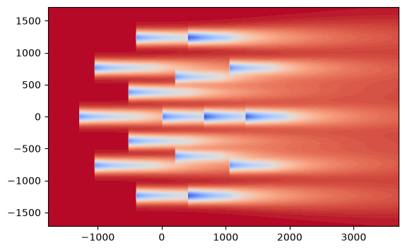
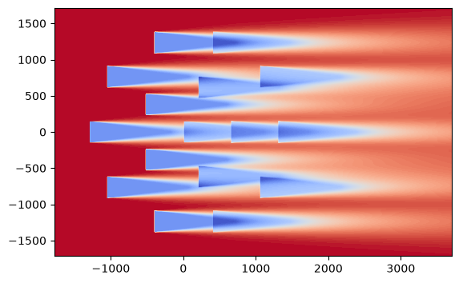
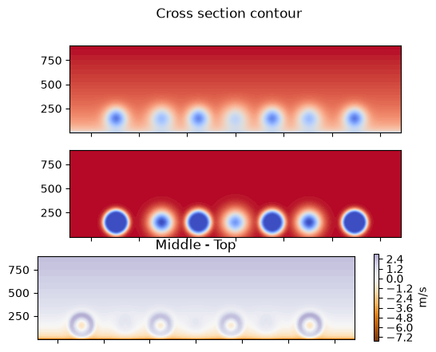